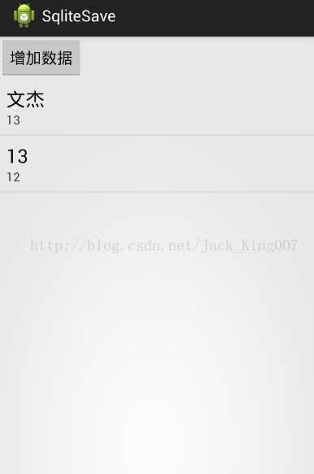

对于安卓我一直认为，用java 去思考安卓内所有东西，用设计模式去解释，各种架构，而不是去记住每个方法有啥用的。
数据库-database 本身就是一个操作类（增删改差），而需要一个help类去协助一起解决 而help又是一个抽象类，里面封装了很多方法，其中就有 Oncreate Onupdate 两个重要的方法，这也算是MVC模式么，不像， java 就是这么一个死德性，封装性高，每个类 都有自己的功能，高聚合低耦合。 其实也算是database 一个助理的存在。
好啦 我还要用一个Demo来 证明思想的
package com.example.sqlitesave;
import android.content.Context;
import android.database.sqlite.SQLiteDatabase;
import android.database.sqlite.SQLiteDatabase.CursorFactory;
import android.database.sqlite.SQLiteOpenHelper;
public class DBhelper extends SQLiteOpenHelper {
private static final String DB_NAME = "school";
private static final int VERSION = 1;
public static final String TABLE_NAME = "stu";
public static final String S_ID = "id";
public static final String S_NAME = "name";
public static final String S_SEX = "sex";
public static final String S_AGE = "age";
public DBhelper(Context context, String name, CursorFactory factory,
int version) {
super(context, name, factory, version);
}
public DBhelper(Context context){
this(context, DB_NAME, null, VERSION);
}
public DBhelper(Context context,int version){
this(context, DB_NAME, null, version);
}
//第一次创建数据库表的时候会调用：创建表
@Override
public void onCreate(SQLiteDatabase db) {
//create table 表名（列名 列类型，列名 列类型....）
String createTable="create table " + TABLE_NAME + " ( " + S_ID
+ " INTEGER PRIMARY KEY autoincrement , " + S_NAME
+ " NVARCHAR(10) , " + S_SEX + " NVARCHAR(2) , "+S_AGE+" int )";
db.execSQL(createTable);
}
@Override
public void onUpgrade(SQLiteDatabase arg0, int arg1, int arg2) {
}
}
help类中没什么多说的，主要是 用全局变量来代理变量减少错误，其实完全可以封装成一个方法，在database中直接传值。
我先说说demo的思想 先用伪代码。

1.页面是一个listview 是来装数据 一个button是用来控制增加数据
2.listview应该条目的短击是删除，长按是修改， 进入界面应该先查询数据。
3.核心思想就是围绕着一个button的点击事件， 查询数据是应该用 contentvalue 来封装，查询出来的数据应该用集合来填充。
所以
第一步，初始化 所有组件 并给button添加各种点击事件，并在Oncreate中查询所有数据 填充起来，适配器因为数据所以只有一行 就应该用系统再带的simplelist。
先说 获取表数据，首先要在help类中定义好，查询语句 关于数据检索的话 就会牵扯到Curce curce是一个接口 专门用于检索数据库的数据， 还能随机读写访问。非她莫属了，因为检索出来的是键值对，所以要用hashmap 来填充
然后通过列名获取列索引-->通过索引获取列上的值
DbHelp.S_ID ID在help类里面 定义了全局变量 所以直接获取 通过列名获取索引 --》cursor.getColumnIndex(DBhelper.S_ID) 通过列索引获取到列上的值
String id = cursor.getInt(cursor.getColumnIndex(DBhelper.S_ID))
+ "";
然后用simpleadapter 讲map put好的数据 进行填充
simpleadapter 有四个属性 第一个 填充的acitivity 第二个 填充的数据源， 第三个 要填充的布局 第四个 数据源从哪里来的 第五个 到哪里去
/** 获取表数据 */
private void getTableData() {
data.clear();
DBhelper dBhelper = new DBhelper(MainActivity.this);
SQLiteDatabase db = dBhelper.getReadableDatabase();
// 参数1表名 参数2要查询列 参数3查询条件“id=? and name=?” 参数4参数3中占位符的值 参数5分组条件 参数6组合条件
// 参数7排序
Cursor cursor = db.query(DBhelper.TABLE_NAME, null, null, null, null,
null, null);// 查出表中所有的数据
HashMap<String, String> hashMap;
while (cursor.moveToNext()) {
hashMap = new HashMap<String, String>();
// 通过列索引获取到列上的值；；；通过列名获取列索引；；；
// 获取id
String id = cursor.getInt(cursor.getColumnIndex(DBhelper.S_ID))
+ "";
hashMap.put("id", id);
// 获取name
String name = cursor.getString(cursor
.getColumnIndex(DBhelper.S_NAME));
hashMap.put("name", name);
// 获取性别
String sex = cursor
.getString(cursor.getColumnIndex(DBhelper.S_SEX));
hashMap.put("sex", sex);
// 获取年龄
int age = cursor.getInt(cursor.getColumnIndex(DBhelper.S_AGE));
hashMap.put("age", age + "");
// 添加到数据集
data.add(hashMap);
}
SimpleAdapter adapter = new SimpleAdapter(MainActivity.this, data,
android.R.layout.simple_list_item_2, new String[] { "name",
"age" }, new int[] { android.R.id.text1,
android.R.id.text2 });
lv.setAdapter(adapter);
}第二步 也就单击 删除数据 首先要从点击发生的view中取到adapter 中的 item的值 然后再取值到ID 进行删除操作 刷新数据
//单击操作：数据删除
lv.setOnItemClickListener(new OnItemClickListener() {
@Override
public void onItemClick(AdapterView<?> parent, View view,
int position, long id) {
//数据库帮助类
DBhelper dBhelper = new DBhelper(MainActivity.this);
//可写入的数据库对象
SQLiteDatabase writableDatabase = dBhelper.getWritableDatabase();
//当前点中的item的数据
curClickHm = (HashMap<String, String>) parent.getAdapter()
.getItem(position);
//删除数据
writableDatabase.delete(DBhelper.TABLE_NAME, "id=?", new String[]{curClickHm.get("id")});
getTableData();//刷新ListView数据
Toast.makeText(MainActivity.this, curClickHm.get("id")+"被删除了", 1000).show();
}
});
}主要代码
package com.example.sqlitesave;
import java.util.ArrayList;
import java.util.HashMap;
import java.util.List;
import android.app.Activity;
import android.app.AlertDialog;
import android.content.ContentValues;
import android.content.DialogInterface;
import android.database.Cursor;
import android.database.sqlite.SQLiteDatabase;
import android.os.Bundle;
import android.text.TextUtils;
import android.view.View;
import android.view.View.OnClickListener;
import android.widget.AdapterView;
import android.widget.AdapterView.OnItemClickListener;
import android.widget.AdapterView.OnItemLongClickListener;
import android.widget.Button;
import android.widget.EditText;
import android.widget.ListView;
import android.widget.SimpleAdapter;
import android.widget.Toast;
public class MainActivity extends Activity {
List<HashMap<String, String>> data;
HashMap<String, String> curClickHm;
private Button btn;
private ListView lv;
@Override
protected void onCreate(Bundle savedInstanceState) {
super.onCreate(savedInstanceState);
setContentView(R.layout.activity_main);
data = new ArrayList<HashMap<String, String>>();
btn = (Button) findViewById(R.id.btnInsert);
lv = (ListView) findViewById(R.id.lv_tableData);
getTableData();
btn.setOnClickListener(new OnClickListener() {
@Override
public void onClick(View v) {
btnClickInsert();
}
});
lv.setOnItemClickListener(new OnItemClickListener() {
@Override
public void onItemClick(AdapterView<?> parent, View view,
int position, long id) {
Toast.makeText(MainActivity.this, "短按~~~", 1000).show();
}
});
// c长按修改数据
lv.setOnItemLongClickListener(new OnItemLongClickListener() {
@Override
public boolean onItemLongClick(AdapterView<?> parent, View view,
int position, long id) {
curClickHm = (HashMap<String, String>) parent.getAdapter()
.getItem(position);
updateData();
Toast.makeText(MainActivity.this, curClickHm.get("id"), 1000)
.show();
return true;
}
});
//单击操作：数据删除
lv.setOnItemClickListener(new OnItemClickListener() {
@Override
public void onItemClick(AdapterView<?> parent, View view,
int position, long id) {
//数据库帮助类
DBhelper dBhelper = new DBhelper(MainActivity.this);
//可写入的数据库对象
SQLiteDatabase writableDatabase = dBhelper.getWritableDatabase();
//当前点中的item的数据
curClickHm = (HashMap<String, String>) parent.getAdapter()
.getItem(position);
//删除数据
writableDatabase.delete(DBhelper.TABLE_NAME, "id=?", new String[]{curClickHm.get("id")});
getTableData();//刷新ListView数据
Toast.makeText(MainActivity.this, curClickHm.get("id")+"被删除了", 1000).show();
}
});
}
/** 修改数据 */
private void updateData() {
// DBhelper dBhelper = new DBhelper(MainActivity.this);
// SQLiteDatabase db = dBhelper.getWritableDatabase();
AlertDialog.Builder builder = new AlertDialog.Builder(MainActivity.this);
builder.setTitle("修改数据");
// 把布局转换视图
View view = View.inflate(MainActivity.this, R.layout.dialog, null);
builder.setView(view);
final EditText etxt_name;
final EditText etxt_sex;
final EditText etxt_age;
etxt_name = (EditText) view.findViewById(R.id.etxt_name);
etxt_sex = (EditText) view.findViewById(R.id.etxt_sex);
etxt_age = (EditText) view.findViewById(R.id.etxt_age);
// 添加按钮
builder.setPositiveButton("确定", new DialogInterface.OnClickListener() {
@Override
public void onClick(DialogInterface dialog, int which) {
String name = etxt_name.getText().toString();
String sex = etxt_sex.getText().toString();
String age = etxt_age.getText().toString();
DBhelper dBhelper = new DBhelper(MainActivity.this);
SQLiteDatabase db = dBhelper.getWritableDatabase();
// 如果编辑框输入内容不为空，则更新到数据库中
if (!isTextOK(name)) {
ContentValues contentValues = new ContentValues();
contentValues.put(DBhelper.S_NAME, name);
db.update(DBhelper.TABLE_NAME, contentValues, "id=?",
new String[] { curClickHm.get("id") });
}
// 重新查询数据库
getTableData();
}
});
builder.show();
}
private void btnClickInsert() {
AlertDialog.Builder builder = new AlertDialog.Builder(MainActivity.this);
builder.setTitle("添加数据");
// 把布局转换视图
View view = View.inflate(MainActivity.this, R.layout.dialog, null);
builder.setView(view);
final EditText etxt_name;
final EditText etxt_sex;
final EditText etxt_age;
etxt_name = (EditText) view.findViewById(R.id.etxt_name);
etxt_sex = (EditText) view.findViewById(R.id.etxt_sex);
etxt_age = (EditText) view.findViewById(R.id.etxt_age);
// 添加按钮
builder.setPositiveButton("确定", new DialogInterface.OnClickListener() {
@Override
public void onClick(DialogInterface dialog, int which) {
String name = etxt_name.getText().toString();
String sex = etxt_sex.getText().toString();
String age = etxt_age.getText().toString();
if (!isTextOK(name) && !isTextOK(sex) && !isTextOK(age)) {
DBhelper dBhelper = new DBhelper(MainActivity.this);
SQLiteDatabase db = dBhelper.getWritableDatabase();
ContentValues contentValues = new ContentValues();
contentValues.put(DBhelper.S_NAME, name);
contentValues.put(DBhelper.S_SEX, sex);
contentValues.put(DBhelper.S_AGE, Integer.parseInt(age));
db.insert(DBhelper.TABLE_NAME, null, contentValues);
getTableData();
}
}
});
builder.setNegativeButton("取消", null);
builder.show();
}
private boolean isTextOK(String str) {
return TextUtils.isEmpty(str);
}
/** 获取表数据 */
private void getTableData() {
data.clear();
DBhelper dBhelper = new DBhelper(MainActivity.this);
SQLiteDatabase db = dBhelper.getReadableDatabase();
// 参数1表名 参数2要查询列 参数3查询条件“id=? and name=?” 参数4参数3中占位符的值 参数5分组条件 参数6组合条件
// 参数7排序
Cursor cursor = db.query(DBhelper.TABLE_NAME, null, null, null, null,
null, null);// 查出表中所有的数据
HashMap<String, String> hashMap;
while (cursor.moveToNext()) {
hashMap = new HashMap<String, String>();
// 通过列索引获取到列上的值；；；通过列名获取列索引；；；
// 获取id
String id = cursor.getInt(cursor.getColumnIndex(DBhelper.S_ID))
+ "";
hashMap.put("id", id);
// 获取name
String name = cursor.getString(cursor
.getColumnIndex(DBhelper.S_NAME));
hashMap.put("name", name);
// 获取性别
String sex = cursor
.getString(cursor.getColumnIndex(DBhelper.S_SEX));
hashMap.put("sex", sex);
// 获取年龄
int age = cursor.getInt(cursor.getColumnIndex(DBhelper.S_AGE));
hashMap.put("age", age + "");
// 添加到数据集
data.add(hashMap);
}
SimpleAdapter adapter = new SimpleAdapter(MainActivity.this, data,
android.R.layout.simple_list_item_2, new String[] { "name",
"age" }, new int[] { android.R.id.text1,
android.R.id.text2 });
lv.setAdapter(adapter);
}
}
好啦 有点累，休息休息